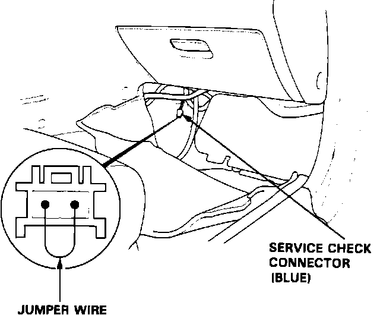
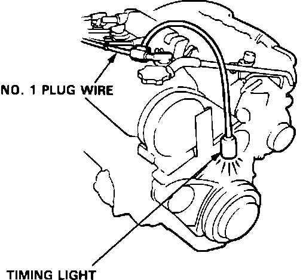
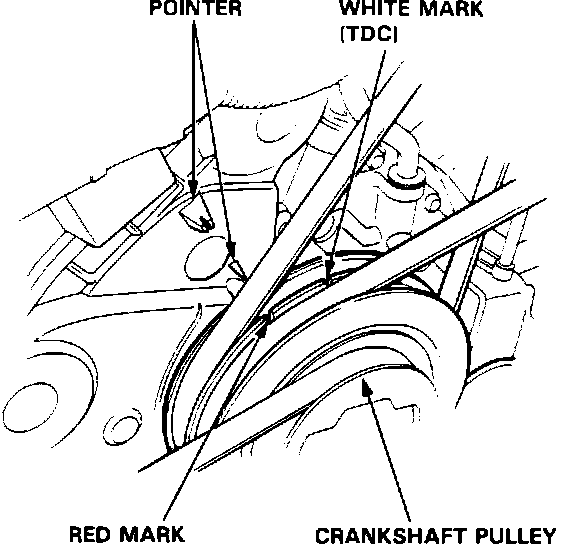
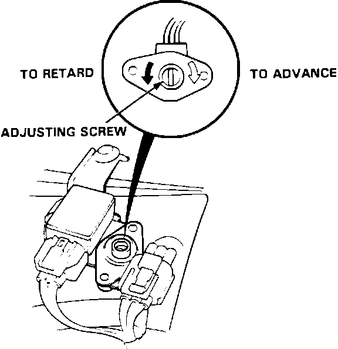

Ignition Timing: Adjustments
1. Start the engine and allow it to warm up (cooling fan comes on).Service Check Connector:

2. Pull out the ignition timing adjusting connector located under the dash on the left side. Connect the WHT/GRN and BRN terminals with a jumper wire.
Timing Light Connection:

3. Connect a timing light to the #1 plug wire.
4. Check the idle speed, see IDLE SPEED ADJUSTMENT.
NOTE: Adjust the idle speed, if necessary, by turning the idle adjusting screw, as shown in IDLE SPEED ADJUSTMENT.
Timing Mark:

5. Inspect ignition timing at idle.
M/T: 15° +/- 2° BTDC (RED) at 700 +/- 50 rpm in neutral
A/T: 15° +/- 2° BTDC (RED) at 700 +/- 50 rpm in neutral
6. If it is necessary to adjust the ignition timing, remove the cover on the adjuster.
7. Drill the 2 rivets holding the adjuster cover off with a 3/16 in. drill bit. Then separate the cover from the ignition timing adjuster.
CAUTION: Do not damage the adjuster when removing the rivets.
Timing Adjuster:

8. Adjust the ignition timing by turning the adjusting screw on the ignition timing adjuster.
9. Remove the jumper wire from the timing adjusting connector.
10. After adjusting, reinstall the cover on the ignition timing adjuster with new rivets, then reinstall the control box cover.